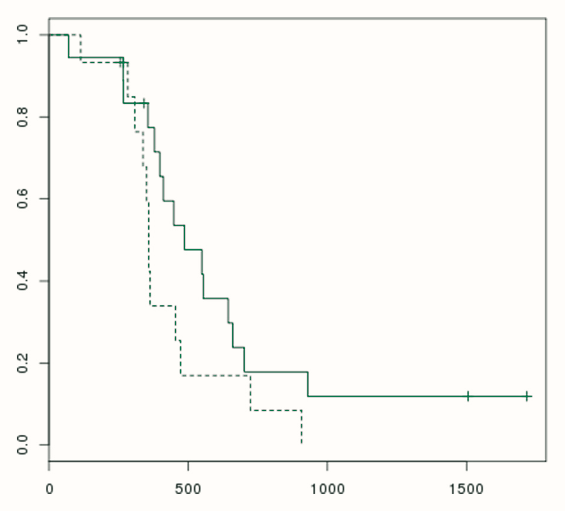

Fig. 5 came back the same.
We dig up old papers and get their data, code and figures working again.
Seven papers dug up so far.

Eight papers, figure by figure
Newest first. Two agree with their papers, six partly.
| Published | Analyzed | Paper | What we lost | What we recovered | Verdict |
|---|---|---|---|---|---|
| PMC2850872 Application of support vector machine modeling for prediction of common diseases: the case of diabetes and pre-diabetes Yu et al., BMC Medical Informatics and Decision Making ResultsGitHub |
|
|
AgreesThe main claim holds; agreed in review | ||
| PMC4015815 Using distances between Top-n-gram and residue pairs for protein remote homology detection Liu et al., BMC Bioinformatics ResultsGitHub |
|
|
Partly agreesThe main claim holds; SVM-DT profiles rebuilt | ||
| PMC4426843 Bias in microRNA functional enrichment analysis Bleazard et al., Bioinformatics ResultsGitHub |
|
|
Partly agreesThe main claim holds; multi-hit counts differ | ||
| PMC4247685 A framework for generalized subspace pattern mining in high-dimensional datasets Curry, BMC Bioinformatics ResultsCode analysisGitHub |
|
|
Partly agrees | ||
| PMC4081639 An efficient algorithm for accurate computation of the Dirichlet-multinomial log-likelihood function Yu and Shaw, Bioinformatics ResultsCode analysisGitHub |
|
|
Agrees | ||
| PMC2349296 Comparative analysis of five protein-protein interaction corpora Pyysalo et al., BMC Bioinformatics ResultsGitHub |
|
|
Partly agreesThe main claim holds; 4 of 8 text claims differ | ||
| PMC1847688 LIMPIC: a computational method for the separation of protein MALDI-TOF-MS signals from noise Mantini et al., BMC Bioinformatics ResultsGitHub |
|
|
Partly agreesFigs 2 to 8 came back | ||
| PMC2666661 Performance of random forest when SNPs are in linkage disequilibrium Meng et al., BMC Bioinformatics ResultsGitHub |
|
|
Partly agreesThe main claim holds; haplotype figures differ at low LD |